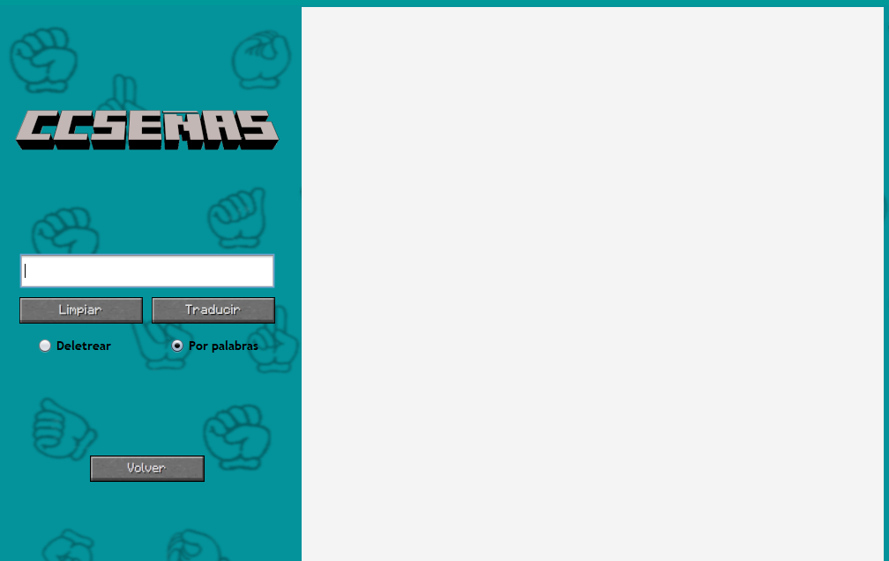
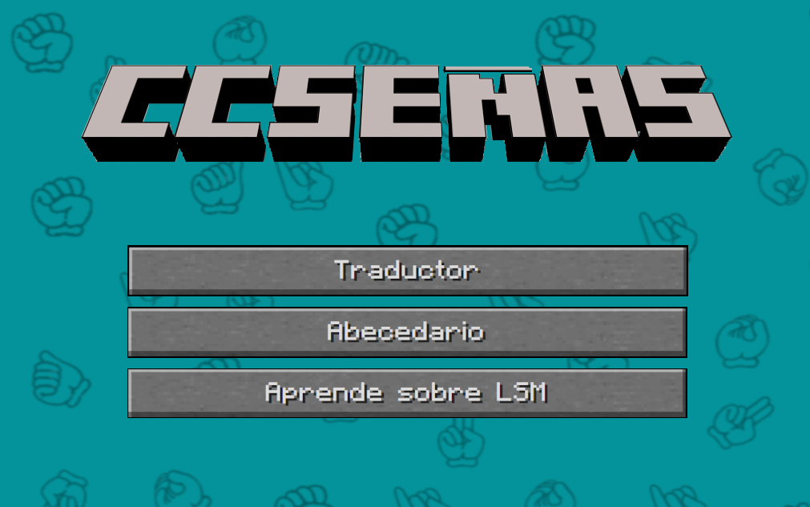

Bienvenido a CCSeñas
El traductor de lenguaje de señas que necesitas
CCSeñas es una herramienta innovadora, intuitiva y fácil de usar que te permite traducir entre el lenguaje de señas y el lenguaje hablado. Ya sea que estés aprendiendo, comunicándote o trabajando en proyectos de accesibilidad, nuestra aplicación está diseñada para hacer que el proceso sea rápido y sencillo.
Con una interfaz amigable y funciones avanzadas, CCSeñas se adapta a tus necesidades, permitiéndote traducir palabras, frases y más con solo un clic. Es la solución perfecta para quienes buscan facilitar la comunicación y el aprendizaje del lenguaje de señas.
¡Empieza a usar CCSeñas hoy mismo y disfruta de una experiencia única, diseñada para hacer la comunicación más accesible para todos!

